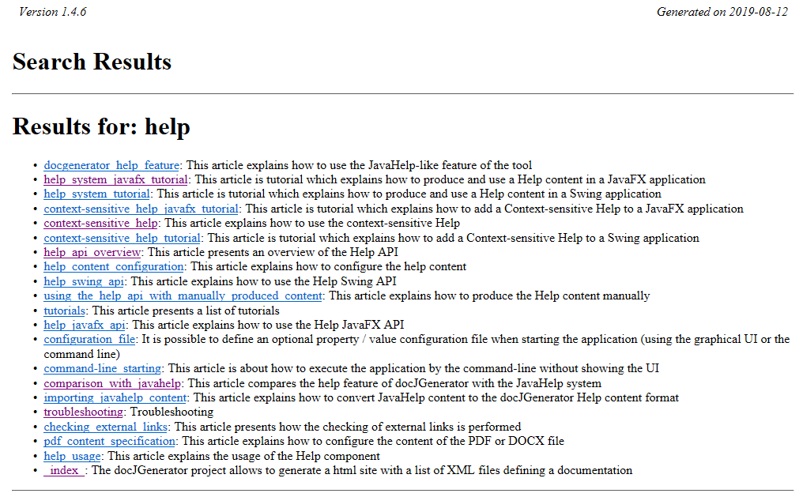
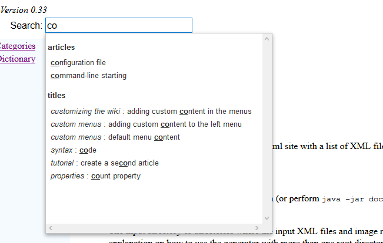
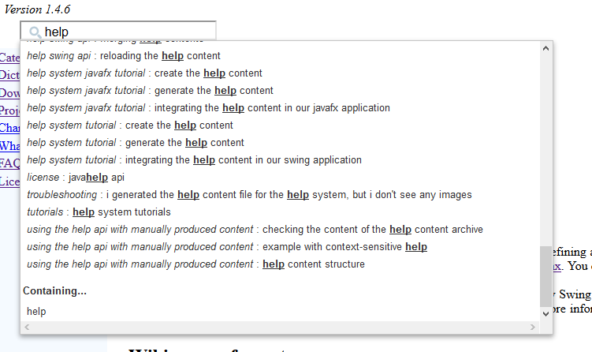
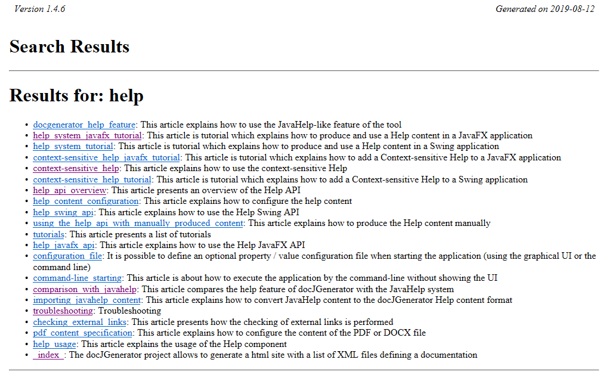

Search box
1 Regular search
1.1 Example
2 Full text search
2.1 Full text search compression level
2.2 Example
3 Search configuration examples
1.1 Example
2 Full text search
2.1 Full text search compression level
2.2 Example
3 Search configuration examples
It is possible to show an auto-complete Search box at the top of the articles by setting the
The Full text search uses the elasticlunr Javascript library (or its associated Java conversion for the JavaHelp implementation) to implement the search.
There are several values for the compression level:
Note that for example, for this wiki:
After clicking on "help", the following page will appear:

search property in the configuration file or the command-line: - By default the Search box allow to search for the articles titles and their table of content sub-titles
- There can be a Search box for the articles titles only
- Or there can be no Search box
Regular search
By default the Search box only search for article titles and table of content sub-titles. Clicking on a link will navigate to the corresponding article or title.Example
Full text search
If the "fullTextSearch" property is set in the configuration file or the command-line, then the search box includes a full-text search in the articles content. Clicking on a link will navigate to a Search page which will present links for all the pages which contain the searched term.The Full text search uses the elasticlunr Javascript library (or its associated Java conversion for the JavaHelp implementation) to implement the search.
Full text search compression level
By default, the JSON or Javascript file for the full text search is compressed to save space. It is possible to have a more readable file by setting the fullTextSearchCompressionLevel configuration property, or in the command-line.There are several values for the compression level:
- "false" or "0" or "minimum" or "no" does not compress the file. This format indent the file to make it more readable, but can be very large
- "true" or "1" or "normal" apply the normal compression to the file (this is the default value). This format does not indent the file and can be three times smaller than the uncompressed one
- "2" or "maximum" apply the maximum compression to the file. This format is much smaller (even than the one with the normal compression), but the json format for the serialized index is not compatible with the regular
elasticlunrJavaScript library. However, the version of the JavaScript library shipped with the generator is compatible with it, so the full-text search will still work if you use the shipped library as is
Note that for example, for this wiki:
- The size of the index for no compression is 3200 Ko
- The size of the index for the normal compression is 750 Ko
- The size of the index for the maximum compression is 310 Ko
Example
After clicking on "help", the following page will appear:

Search configuration examples
Examples with search only on articles, without full text search:java -jar docGenerator.jar -input=wiki/input -output=wiki/output -search=true java -jar docGenerator.jar -input=wiki/input -output=wiki/output -search=articlesExample with search on articles and titles, without full text search:
java -jar docGenerator.jar -input=wiki/input -output=wiki/output -search=titles
Example with search on articles and titles, with full text search:
java -jar docGenerator.jar -input=wiki/input -output=wiki/output -search=titles -fullTextSearch=true
Example with search on articles and titles, with full text search and maximum index compression:
java -jar docGenerator.jar -input=wiki/input -output=wiki/output -search=titles -fullTextSearch=true -fullTextSearchCompressionLevel=maximum
×

Categories: general